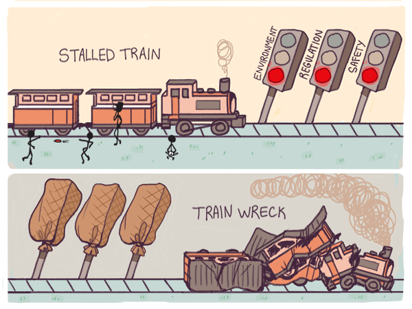

Agilité et illisibilité
Alors même que l’approche pragmatique des hackers montait en puissance, l’approche des puristes entrait dans une période douloureuse et compliquée de lent déclin. Même si les projets informatiques recourant aux méthodes des puristes avaient des ambitions grandissantes, leur architecture et leur équipe de programmeurs interchangeables prenaient de telles proportions qu’ils en devenaient ingérables. Ils commençaient à montrer les symptômes habituels des échecs dont l’ère industrielle est coutumière : explosion des budgets, délais à rallonge, lancements ratés, mauvaises surprises en tout genre et régressions fonctionnelles allant jusqu’à rendre le système lui-même inutilisable. Ces exemples d’échecs sont caractéristiques de ce que James Scott1 a pu appeler la dictature moderniste : une conception de l’urbanisme propre aux puristes qui fait passer la vision conceptuelle avant toute chose. Pour les partisans de la dictature moderniste, tout ce qui n’entre pas dans leur approche idéale d’un système parfait est perçu comme « illisible » et anxiogène. Afin de garder un monde lisible à leurs yeux, ils peuvent aller jusqu’à supprimer tout ce qui les perturbe. Les échecs finissent par arriver parce que certains éléments nécessaires au fonctionnement du système sont abandonnés en chemin.
Ainsi, les plans géométriques de certaines zones résidentielles sont parfaitement lisibles et totalement conformes à une conception architecturale platonicienne, en dépit du fait qu’elles sont tristes et invivables. Les quartiers pauvres, au contraire, sont totalement illisibles et anxiogènes aux yeux des urbanistes quand bien même ils grouillent d’activité. La conséquence est connue : la dictature des urbanistes impose de raser ces taudis. On reloge alors les habitants dans des quartiers HLM quitte à détruire en route la vie socio-économique qui s’était développée.
Dans le logiciel, ce que les puristes de l’informatique trouvent illisibles et anxiogènes, ce sont les bidouillages faits au doigt mouillé par les hackers pour trouver des solutions créatives. Quand les premières méthodes pragmatiques sont apparues dans les années 1960, les architectes informatiques les plus puristes ont réagi exactement comme les urbanistes : en essayant d’éradiquer ces « taudis logiciels ». Ces essais ont pris la forme d’impératifs de documentation de plus en plus stricts et de méthodes de contrôle qualité issues du monde industriel. Le savoir- faire des hackers, qui faisait vivre le logiciel, a souvent été perdu en cours de route.
Pour résumer, avec la dictature moderniste, les projets sont pris dans un effet tunnel. C’est un mode de fonctionnement qui s’impose aux architectes dans des environnements tellement compliqués que personne ne peut réellement y comprendre quelque chose. Le besoin de tout diriger et ordonner d’une main de fer est destructeur car cela amène les architectes à éliminer le désordre apparent qui est vital dans la réussite d’un projet.
Les inconvénients de la dictature moderniste sont d’abord apparus dans des domaines tels que la gestion forestière, l’urbanisme et les travaux publics. Forêts détruites par des maladies, villes « planifiées » invivables, capitalisme de connivence et corruption généralisée constituent les dysfonctionnements habituels des méthodes autoritaires dans ces domaines. Dans le monde occidental, ce problème a été mis en lumière dans les années 1960 par des urbanistes comme Jane Jacobs et des écologistes comme Rachel Carson qui ont été des pionnières de la dénonciation des approches autoritaires.
Dans les années 1970 sont apparus des processus de consultation plus démocratiques, dont nous sommes familiers aujourd’hui. Ces processus furent également adoptés par l’informatique, juste au moment où les « mainframes2 » commençaient à laisser la place aux mini-ordinateurs.
Malheureusement, alors que les processus de concertation publics mis en œuvre ont atténué les causes des problèmes, dans la pratique cela n’a fait qu’amplifier les conséquences : ralentissement des rythmes de travail, hausses des coûts et corruption moins visible mais plus importante. De nouveaux acteurs sont entrés dans la danse, apportant avec eux leurs visions utopiques et leurs tendances autoritaires. Le problème qui se posait était maintenant de faire cohabiter ces deux visions autoritaires et antinomiques. Plus grave : les réalités illisibles qui avaient réussi à subsister étaient anxiogènes pour toutes les parties prenantes et n’en étaient que plus exposées aux idées reçues et à l’élimination systématique. Ainsi embourbés dans des procédures coûteuses, certains projets compliqués ont été réduits à un train de sénateur. La dictature du plus grand nombre – qui s’exprimait sous la forme de potentats locaux tyranniques – s’est mise à régenter le moindre progrès qui se présentait. L’innovation en fut la principale victime car, par définition, elle n’est accessible qu’à quelques happy few. Ce que Peter Thiel appelle des secrets : des choses que les entrepreneurs sont les seuls à croire et qui leur permettent d’arriver à des résultats inespérés.
Cette approche était particulièrement évidente dans des secteurs tels que la défense. Dans les démocraties libérales, il n’était pas rare que plusieurs corps d’armée se fassent concurrence pour influencer la conception d’un nouveau type d’armement, les politiciens se battant quant à eux pour créer des emplois dans leurs circonscriptions. Des projets importants sont ainsi devenus totalement incontrôlables et ont abouti à des résultats connus : explosion des coûts, compromis technologiques précaires et retards en tous genres. Dans les pays non démocratiques, les conséquences se sont révélées pires encore : l’autoritarisme moderniste s’est prolongé sans le moindre contrôle (et continue d’ailleurs encore dans des pays comme la Corée du Nord ou la Russie), causant des ravages qui auraient pu être évités.
Le logiciel n’a pas échappé à cette épidémie. L’échec retentissant du lancement du site healthcare.gov3 en est un bon exemple. Les processus « démocratiques » établis pour minimiser les risques ont tendance à ralentir ou arrêter les processus et à aggraver les problèmes.
Que ce soit dans l’ingénierie traditionnelle ou dans le logiciel, le modernisme autoritaire aboutit à des situations ubuesques : ou bien le train s’emballe et finit par dérailler par manque de contrôle, ou bien au contraire le train fait du sur-place à force d’obéir sans cesse à des ordres et des contre-ordres.
Ces exemples d’échecs sont caractéristiques de ce que James Scott1 a pu appeler la dictature moderniste : une conception de l’urbanisme propre aux puristes qui fait passer la vision conceptuelle avant toute chose. Pour les partisans de la dictature moderniste, tout ce qui n’entre pas dans leur approche idéale d’un système parfait est perçu comme « illisible » et anxiogène. Afin de garder un monde lisible à leurs yeux, ils peuvent aller jusqu’à supprimer tout ce qui les perturbe. Les échecs finissent par arriver parce que certains éléments nécessaires au fonctionnement du système sont abandonnés en chemin.
Ainsi, les plans géométriques de certaines zones résidentielles sont parfaitement lisibles et totalement conformes à une conception architecturale platonicienne, en dépit du fait qu’elles sont tristes et invivables. Les quartiers pauvres, au contraire, sont totalement illisibles et anxiogènes aux yeux des urbanistes quand bien même ils grouillent d’activité. La conséquence est connue : la dictature des urbanistes impose de raser ces taudis. On reloge alors les habitants dans des quartiers HLM quitte à détruire en route la vie socio-économique qui s’était développée.
Dans le logiciel, ce que les puristes de l’informatique trouvent illisibles et anxiogènes, ce sont les bidouillages faits au doigt mouillé par les hackers pour trouver des solutions créatives. Quand les premières méthodes pragmatiques sont apparues dans les années 1960, les architectes informatiques les plus puristes ont réagi exactement comme les urbanistes : en essayant d’éradiquer ces « taudis logiciels ». Ces essais ont pris la forme d’impératifs de documentation de plus en plus stricts et de méthodes de contrôle qualité issues du monde industriel. Le savoir- faire des hackers, qui faisait vivre le logiciel, a souvent été perdu en cours de route.
Pour résumer, avec la dictature moderniste, les projets sont pris dans un effet tunnel. C’est un mode de fonctionnement qui s’impose aux architectes dans des environnements tellement compliqués que personne ne peut réellement y comprendre quelque chose. Le besoin de tout diriger et ordonner d’une main de fer est destructeur car cela amène les architectes à éliminer le désordre apparent qui est vital dans la réussite d’un projet.
Les inconvénients de la dictature moderniste sont d’abord apparus dans des domaines tels que la gestion forestière, l’urbanisme et les travaux publics. Forêts détruites par des maladies, villes « planifiées » invivables, capitalisme de connivence et corruption généralisée constituent les dysfonctionnements habituels des méthodes autoritaires dans ces domaines. Dans le monde occidental, ce problème a été mis en lumière dans les années 1960 par des urbanistes comme Jane Jacobs et des écologistes comme Rachel Carson qui ont été des pionnières de la dénonciation des approches autoritaires.
Dans les années 1970 sont apparus des processus de consultation plus démocratiques, dont nous sommes familiers aujourd’hui. Ces processus furent également adoptés par l’informatique, juste au moment où les « mainframes2 » commençaient à laisser la place aux mini-ordinateurs.
Malheureusement, alors que les processus de concertation publics mis en œuvre ont atténué les causes des problèmes, dans la pratique cela n’a fait qu’amplifier les conséquences : ralentissement des rythmes de travail, hausses des coûts et corruption moins visible mais plus importante. De nouveaux acteurs sont entrés dans la danse, apportant avec eux leurs visions utopiques et leurs tendances autoritaires. Le problème qui se posait était maintenant de faire cohabiter ces deux visions autoritaires et antinomiques. Plus grave : les réalités illisibles qui avaient réussi à subsister étaient anxiogènes pour toutes les parties prenantes et n’en étaient que plus exposées aux idées reçues et à l’élimination systématique. Ainsi embourbés dans des procédures coûteuses, certains projets compliqués ont été réduits à un train de sénateur. La dictature du plus grand nombre – qui s’exprimait sous la forme de potentats locaux tyranniques – s’est mise à régenter le moindre progrès qui se présentait. L’innovation en fut la principale victime car, par définition, elle n’est accessible qu’à quelques happy few. Ce que Peter Thiel appelle des secrets : des choses que les entrepreneurs sont les seuls à croire et qui leur permettent d’arriver à des résultats inespérés.
Cette approche était particulièrement évidente dans des secteurs tels que la défense. Dans les démocraties libérales, il n’était pas rare que plusieurs corps d’armée se fassent concurrence pour influencer la conception d’un nouveau type d’armement, les politiciens se battant quant à eux pour créer des emplois dans leurs circonscriptions. Des projets importants sont ainsi devenus totalement incontrôlables et ont abouti à des résultats connus : explosion des coûts, compromis technologiques précaires et retards en tous genres. Dans les pays non démocratiques, les conséquences se sont révélées pires encore : l’autoritarisme moderniste s’est prolongé sans le moindre contrôle (et continue d’ailleurs encore dans des pays comme la Corée du Nord ou la Russie), causant des ravages qui auraient pu être évités.
Le logiciel n’a pas échappé à cette épidémie. L’échec retentissant du lancement du site healthcare.gov3 en est un bon exemple. Les processus « démocratiques » établis pour minimiser les risques ont tendance à ralentir ou arrêter les processus et à aggraver les problèmes.
Que ce soit dans l’ingénierie traditionnelle ou dans le logiciel, le modernisme autoritaire aboutit à des situations ubuesques : ou bien le train s’emballe et finit par dérailler par manque de contrôle, ou bien au contraire le train fait du sur-place à force d’obéir sans cesse à des ordres et des contre-ordres.
{kind=link}

Par chance, les méthodes agiles de développement arrivent à combiner à la fois l’autorité à bon escient et le pluralisme de vues, ce qui permet de limiter les risques sans toutefois retarder le projet. Les principes de base du développement agile ont été exprimés en 2001 par un groupe de dix-sept informaticiens dans un document désormais connu sous le titre de Manifeste agile et qui constitue une évolution de l’approche pragmatique qui avait déjà été clairement adoptée par l’IETF. Le coût de l’agilité est qu’en apparence le projet avance de façon anarchique. Les méthodes agiles catalysent l’illisibilité, permettent les démarches de créativité collective et protègent des visions dictatoriales des utopistes. Adopter les méthodes agiles permet aux individus et aux entreprises de mieux supporter l’anxiété et de s’adapter petit à petit au chaos apparent. Avec le temps, donc, les méthodes agiles peuvent devenir de plus en plus agiles. Les changements apportés par les méthodes agiles ne se sont pas limités au logiciel, ils ont également touché les domaines qui, traditionnellement, avaient vu l’apparition de l’autoritarisme moderniste. Le logiciel a commencé à s’attaquer à des domaines tels que la gestion forestière, l’urbanisme et la protection de l’environnement. Des systèmes d’information géographiques (SIG) open source dans la gestion forestière, des projets d’open data dans la gestion de l’urbanisme et des technologies de monitoring en agriculture ; tout cela concourt à développer les informations disponibles tout en éliminant la paperasse fastidieuse. Comme nous le verrons dans les chapitres suivants, dans tous les domaines, une plus grande disponibilité des informations et une plus grande fluidité facilitent la tâche des hackers. Une fois qu’un domaine s’ouvre aux hackers, le logiciel commence à le dévorer. Le développement s’accélère, le train peut commencer à avancer plus vite, sans courir à sa perte, ce qui évite les impasses. Aujourd’hui, le passage des puristes aux pragmatistes a pris une importance telle qu’on en voit les premières conséquences au niveau de l’économie du logiciel toute entière. Dans les années qui viennent de s’écouler, certains puristes de l’économie ont milité en faveur d’une vision idéalisée de l’open source qu’on pourrait appliquer aux projets les plus importants, tant privés que publics. Mais ils ont tous été confrontés à une dure réalité, trop complexe pour se laisser mener par une idéologie économique ou une autre. C’est pourquoi la pratique de consensus approximatifs et de mécanismes économiques bien connus ont pris le dessus sur les idéologies ad hoc et les débats sans fin. Aujourd’hui, tous les mécanismes économiques – économie de marché, économie planifiée, secteur non marchand et même les organisations criminelles – sont touchés par le logiciel ; et vice-versa. C’est la conséquence naturelle de la place prise aujourd’hui par le logiciel, qui s’attaque à tous les secteurs et qui touche tout le monde. En 1943, seuls quelques spécialistes triés sur le volet et travaillant sur des projets militaires classés secret défense pouvaient accéder aux premiers ordinateurs. Même en 1974, l’année du pic de centralisation, quelques privilégiés seulement pouvaient accéder à des mini-ordinateurs comme le DEC-PDP, qui par ailleurs a ouvert la voie au hacking. Mais dès 1993 avec l’apparition des ordinateurs personnels, la vision de Bill Gates – un PC sur chaque bureau – était presque devenue une réalité, dans les pays développés au moins. Et à partir de l’an 2000 les ordinateurs portables et les BlackBerry préfiguraient déjà le monde que nous connaissons aujourd’hui : un accès quasi-universel aux smartphones et un nombre d’ordinateurs par personne en constante progression. On comprend alors pourquoi le slogan de l’IETF « un consensus approximatif et un code qui fonctionne » s’est imposé comme la seule doctrine viable pour les développements techniques et les modèles économiques qui en ont découlé. La conséquence de la prise de pouvoir du pragmatisme a été l’essor d’un feu prométhéen quasiment incontrôlable. Parce que tel est leur bon plaisir et sans que cela leur demande des moyens économiques particuliers, des centaines de milliers d’entrepreneurs du logiciel font déferler leurs innovations à la face d’un monde qui en reste coi. Maintenant que nous sommes perdus entre un chaos anxiogène et la complexité de la prospérité pour tous, posons-nous la question : qu’est-ce donc exactement que le logiciel?[1] Chercheur en sciences politiques. La citation est extraite d’un de ses ouvrages : Seeing like a state, Yale University Press, 1999 (ndt). [2] Principal type d’ordinateur que l’on trouvait dans les années 1960 et 1970, de taille imposante, occupant une grande salle et dont l’accès était limité à un nombre réduit de personnes (ndt). [3] Le site gouvernemental proposé par le gouvernement américain en 2013 pour répertorier les assurances de santé.